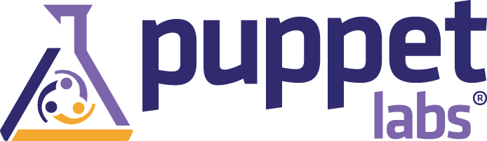
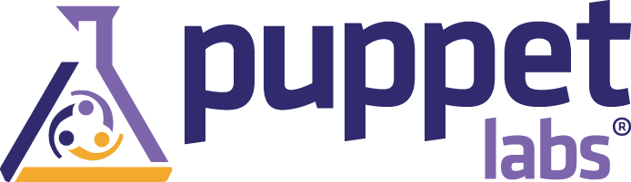

Aquí estamos otra vez...
#DevOSSAzuredays en las oficinas de Microsoft. Mongodb, wordpress, openMOOC.. Todo sobre Azure pic.twitter.com/Ekz2BGkm7b
— Hector Montenegro (@hectorsm) Mayo 7, 2014¿Y yo qué pinto en esto?
BITERGIA
ASOLIF
MAD OpenTech
¿Y qué es esto de DevOps?
"DevOps es un acrónimo inglés de development (desarrollo) y operations (operaciones), que se refiere a una metodología de desarrollo de software que se centra en la comunicación, colaboración e integración entre desarrolladores de software y los profesionales de operaciones en las tecnologías de la información (IT). DevOps es una respuesta a la interdependencia del desarrollo de software y las operaciones IT. Su objetivo es ayudar a una organización a producir productos y servicios software rápidamente.
 


... y cada día más
Mejor preguntar a los que saben...
| 9:30 - 10:00 | Presentación y bienvenida | José Manrique / Juanje Ojeda |
| 10:00 - 10:30 | Impacto de DevOps en el negocio de las compañías | Luis Peralta. CTO, Tuenti |
| 10:30 - 11:35 | La potencia de Docker y su gestión y despliegue en Azure | Javi Moreno. Resident Futurist & Evangelist, CAPSiDE
Ángel Fernández. Technical Evangelist, Microsoft |
| 11:35 - 12:00 | Developers food (AKA café) | |
| 12:00 - 12:45 | Cómo 'pappetizar' en la nube | Nicolas Corrarello. Technical Solutions Engineer at Puppet Labs |
| 12:45 - 13:25 | Chef como herramienta para automatizar el despliegue de aplicaciones en máquinas virtuales sobre Azure | Juanje Ojeda |
| 13:25 - 14:00 | Integración y despliegue continuo con Github y cómo montarlo en la nube | JJ Merelo. Depto. de Arquitectura y Tecnología de Computadores, Universidad de Granada. Oficina de Software Libre. |
| 14:00 - 14:15 | Cierre: Visión de MSFT por la implementación de DevOps | Rafael Achaerandio. Regional director of Strategy and Business Development at Microsoft WE HQ. |